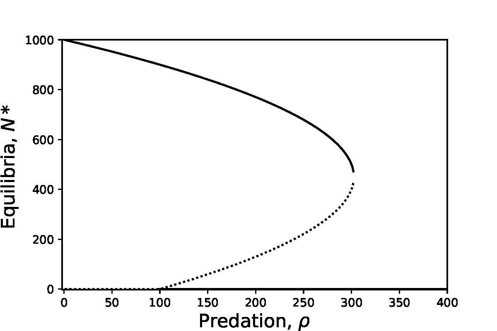
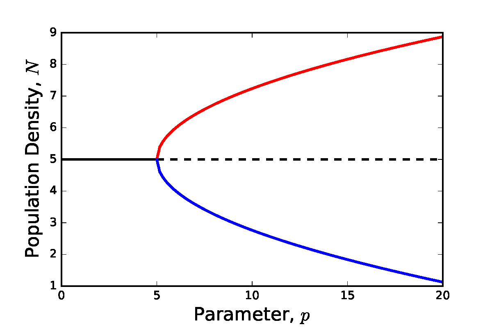

2 - Bifurcations and introducing competition ¶
Introducing bifurcations¶
In the previous model, looking at spruce budworm, we saw that we could get a number of qualitatively different outcomes depending on the parameters. The plots we made show how these equilibria and their stability vary as we change the predation rate. We clearly see points where equilibria collide, appear and change stability. These are important transitions known as ‘bifurcations’ and are one of the most important aspects of a dynamical system. Bifurcations tell you when and how you can expect discrete shifts in behaviour as you change one or more parameters.
There are only a few different types of bifurcation that are possible. Here we will start by looking at the three most fundamental types, and we will add some more as we go through the course. In all cases we will see how changing a particular parameter leads to a change in the stability, or existence of, the equilibria in the model. We will largely do this by looking at bifurcation diagrams. These plot the location and stability (solid lines denote stable equilibria, dashed lines unstable) of equilibria as parameters vary. These first three examples can all be seen in one-dimensional (i.e. one variable) models as well as in higher dimensions. (There is some formal mathematical work and terminology behind bifurcations that we will not concern ourselves with here. If you want to know more, the textbook Nonlinear Dynamics and Chaos, by Strogatz is a very good place to start.)
Standard bifurcations¶
Transcritical bifrucation¶
The transcritical bifurcation is perhaps the most common form of bifurcation in a mathematical biology model. It occurs when two equilibria intersect and swap stability. It is so common because we will usually have a trivial equilibrium where nothing exists, which will lose stability when it intersects with an equilibrium where something exists.
We can see an example of a transcritical bifurcation in the spruce budworm model along the line \(N=0\). For \(\rho<100\) the \(N=0\) equilibria is unstable. Techncially a second equilbiria exists at \(N<0\), which would be locally stable, but is not biologically feasible. For \(\rho>100\) we see that now the \(N=0\) equilibrium is stable, with the second equilibrium now present at \(N>0\) being unstable. The point where these two equilibria meet and swap stability, \(\rho=100\) is the transcriticial bifurcation, as we can see in the bifurcation diagram below.
Figure: Bifurcation diagram of the spruce budworm model, showing both a transcritical and saddle-node bifurcation.
Saddle-Node bifurcation¶
The transcritical bifurcation occurs when (at least) one equilibria must always exist over the full range of the parameter (i.e. the trivial equilibrium). However, there are also cases where equilibria can be created or destroyed as a parameter is varied. These are called saddle-node or blue-sky bifurcations (the former because what gets created at the bifurcation is a stable-unstable pair of equilibria; the latter because the equilibria appear out of the clear blue sky).
A simple example of a saddle-node bifurcation can again be seen from the spruce budworm model. For \(\rho>300\) we see that only the \(N=0\) equilibrium exists. As \(\rho\) is reduced the two non-zero equilibria appear, one stable and the other a saddle, and diverge.
Saddle-node bifurcations thus have very important consequences for any biological system. It means that there may not be a gradual and steady decrease down to extinction (as in the transcritical case), but a very sudden crash. This is often termed ‘a catastrophe’ and is a focus of much research to understand the risk of sudden extinctions in real populations. For example, models of fisheries management show that if the rate of fishing becomes too high we may see sudden declines in fish stocks. Moreover, the decline is very hard to reverse as a small decrease in the harvesting rate does not easily return the system to the stable equilibrium as the saddle is still pushing the population densities lower. This is an example of hysteresis.
Pitchfork bifurcation¶
If you look up bifurcations in any good textbook, it will list the three standard bifurcations as the two we have already seen and the pitchfork bifurcation. In reality, such a bifurcation occurs extremely rarely in mathematical biology models (it is usually a result of strong symmetry in a system). However, for completeness we shall briefly mention it here.
The reason for the naming of this bifurcation is obvious by looking at the bifurcation diagram below. At low value of the bifurcation parameter there is a single stable equilibria. At the bifurcation point this existing point remains but loses stability, and two new stable equilibria emerge.
Figure: Made up example of a pitchfork bifurcation.
Interacting populations: Competition¶
Case study: Red and grey squirrels¶
Populations rarely (if ever) exist in isolation. In reality, the growth rate of a given population depends not only on itself, but also on other populations. This can result from a range of ecological relationships, including competition for resources, predation, cooperation, etc.
As an example of interacting populations, consider a model for the population levels of two species that compete for a common resource (sometimes known as the Lotka-Volterra model). We can think of our two species as grey and red squirrels (famous competitors in the UK), but we could equally consider sheep and rabbits, or any other suitable pair. As with our previous single population models, we begin by considering what factors might contribute to the birth and death processes that control the rates of changes of the two populations. We assume:
There is only a limited supply of nuts for squirrels to eat. Thus, even in the absence of inter-species competition, the environment would have a limited carrying capacity (i.e.\ a maximum number of squirrels that it could support). The overall population for each species can be modelled using a logistic growth term with intra-specific competition, as we saw previously.
The two types of squirrel compete at a rate proportional to the product of their populations (the more there are, the more likely they are to want to eat the same nuts). This is an example of \textit{inter-specific competition}.
We also assume that the carrying capacity for the two types of squirrel can be different (e.g.\ one species will eat a wider variety of food than the other), and that the two species can have different susceptibilities to competition (e.g.\ one species is more timid than the other). Without inter-specific competition, we could model the two populations using two logistic growth equations:
where \(R\) and \(G\) represent the respective population levels of red and grey squirrels. Note that we have already done a little non-dimensionalising here, and that \(a\) and \(c\) are thus the respective relative carrying capacities. To include competition between the species, we add an additional term to each equation:
where \(b\) and \(d\) are the strengths of inter-specific competition. While this model is only a little more complicated than we saw previously, this system cannot be solved explicitly since it is non-linear. We will therefore need to take a qualitative approach to understanding what can possibly happen in this model. However, we can still gain considerable insight in to the system by applying the tools of dynamical systems. (Those of you who took MAS222 will have seen these tools in use before. There are a set of notes available on Blackboard which you are encouraged to use as revision material. We would also strongly recommend, Nonlinear Dynamics and Chaos, by Strogatz as a textbook.)
Phase portraits¶
A good way to visualise what is happening here is through a phase portrait. We are used to producing plots of things like \(R(t)\) vs \(t\), especially when we have an explicit solution to work from. However, to get insight in to the general properties of our system we could instead plot \(R(t)\) vs \(G(t)\). Without explicit solutions we can’t plot exact trajectories, but our equations give us enough information to understand the qualitative dynamics of our system. There is a simple set of processes to work through to produce most phase portraits:
Draw axes of your two key variables (all of the phase portraits you will meet in this module will be two-dimensional phase planes - we are not so mean as to make you draw in higher dimensions).
Determine how much of your phase plane is biologically feasible. For example in almost any biological example, your variables will always be positive, so you can ignore any negative values.
Using your ODEs, calculate nullclines - lines along which each ODE is zero (i.e. in our current case, there will be a nullcline(s) where \(dR/dt=0\) and a nullcine(s) where \(dG/dt=0\)) - and draw them on your plot.
Note that where nullclines from different equations cross, there is necessarily an equilibrium (because both of your ODEs are zero at this point).
Using your ODEs, work out the qualitative directions of travel in each of the regions separated by the nullclines (i.e. in this example, where is \(dR/dt\) positive or negative, and where is \(dG/dt\) positive or negative?). This is often best achieved by taking one or both variables close to zero, or close to their equilibria. Draw arrows on your phase portrait to show these direction fields.
Using the arrows you have just drawn and the locations of equilibria, sketch on some sample trajectories.
In this example our two axes will be our population densities, \(R\) and \(G\), and we know both densities must be non-negative. Now let us find the nullclines:
We therefore have a nullcline on each axis, and two nullclines which are decreasing straight lines on our plot. These nullclines can be ordered in four relative configurations, giving us four qualitatively different phase portraits.
Have a go
Sketch out the four qualitatively different phase portraits.
By definition, equilibria occur at the points of intersection of the \(R\)- and \(G\)-nullclines. Looking at our phase portraits, we see that \((0,0)\), \((0,c)\) and \((a,0)\) are always equilibria. These respectively mean no squirrels present, only grey squirrels present and only red squirrels present. Then we sometimes have another equilibrium - if \(a>bc\) and \(c>ad\) or \(a<bc\) and \(c<ad\) - where both species are present.
To get an idea of how the population levels behave in the four different parameter regimes, we can look at the direction fields for each case. We can deduce from our phase portraits that the qualitative natures of the trajectories are:
in (a), \(R\) ``wins” and settles to a steady population level, while \(G\) goes extinct.
in (b), \(G\) ``wins” and settles to a steady population level, while \(R\) goes extinct.
in (c), \(R\) and \(G\) co-exist at steady non-zero population levels.
in (d), the outcome depends on the starting condition, with either \(R\) or \(G\) eventually winning out and sending the other population to extinction.
3 key points¶
Changes in the existence and/or stability of equilibria are called bifurcations.
We can model competition between two species by including a negative interaction term in bth species’ ODEs.
Phase portraits show how four different qualitative outcomes can occur in a competition model.